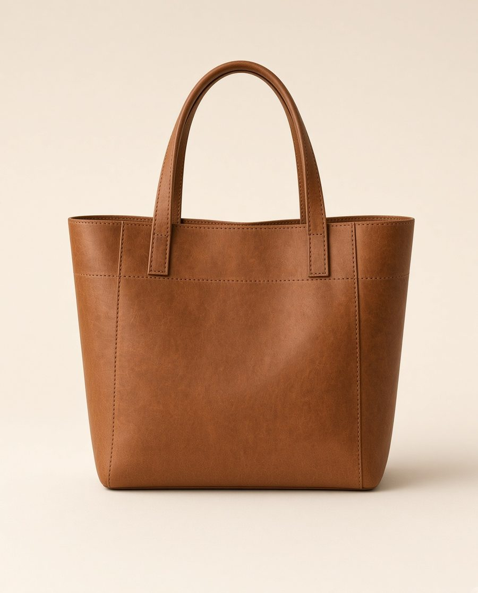
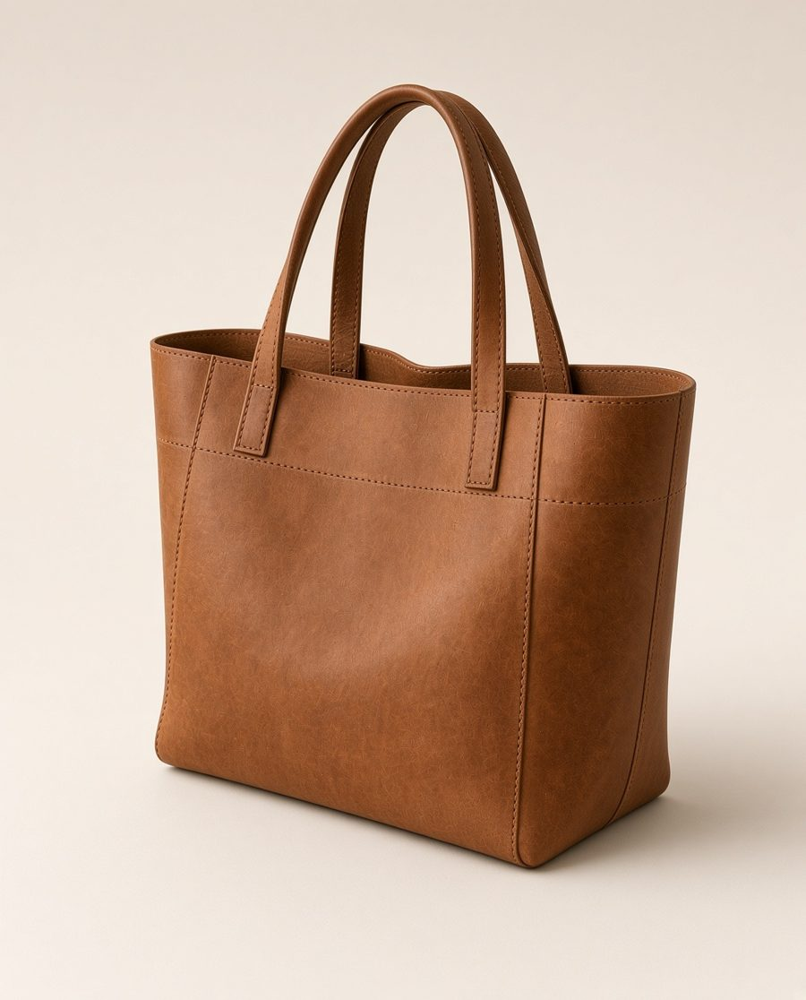
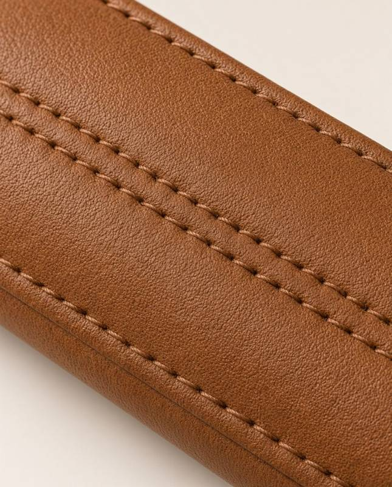
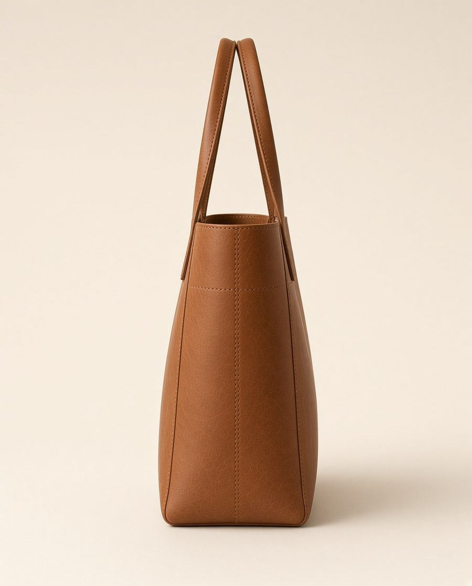
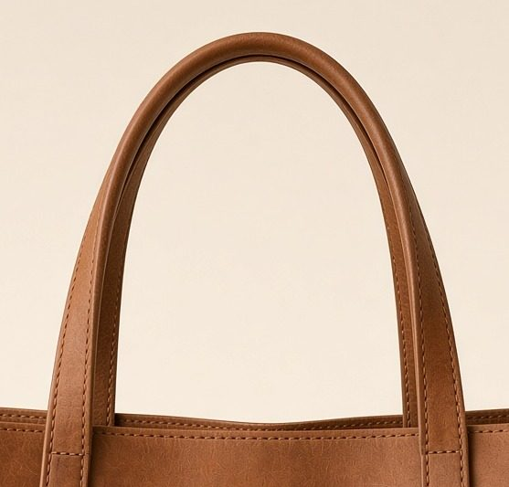

One background. Five views.
Locked example for the cabas. Background stays Nacre #F4EFE6 on every frame. The piece does not change.
- One color per job. Default Nacre.
- Views: face, three-quarter, material, side, handles.
- Do not invent lining, hardware, or a fabric backdrop.




